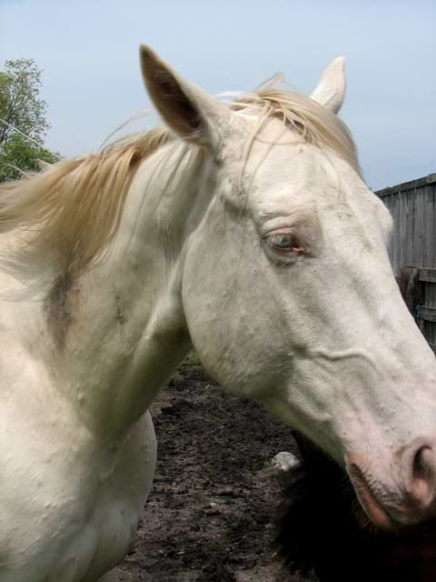

SCP-042

- Item nº:
- SCP-042
- Classe do objeto:
- Safe
Procedimentos Especiais de Contenção:
O SCP-042 está atualmente alojado no Cercado de Segurança Mínima 12, na Área de Bio-Pesquisa-32. Apesar da aparente falta de disposição do SCP-042 para tentar fugir neste momento, as medidas de segurança devem ser mantidas o tempo todo. As tentativas anteriores de manter a saúde da vegetação rasteira no Cercado 12 fracassaram até hoje. Apesar da rega regular, a presença do SCP-042 deixa o solo ressecado por onde ele pisa. Como não se determinou o que acontece com a água adicionada, o programa de rega foi suspenso por desnecessário e potencialmente perigoso para o lençol freático local. O monitoramento dos níveis dos poços locais e a coleta de amostras da água da região devem ser feitos semanalmente.
O pessoal que interage com o SCP-042, incluindo tratadores, equipe médica, responsáveis pela alimentação e equipe de limpeza, deve se submeter a uma revista minuciosa, incluindo [DADOS REDIGIDOS], antes de entrar no Cercado 12. Qualquer funcionário que tente contrabandear uma arma, ou um objeto que possa ser usado como arma, deve ser imediatamente [DADOS REDIGIDOS]. O pessoal deve passar por triagem psicológica uma vez por semana depois de interagir de qualquer forma com o SCP-042. A equipe médica que examina as feridas nas costas do SCP-042 deve ser monitorada de perto o tempo todo, para que não tente sacrificar o SCP-042.
Descrição:
O SCP-042 é um animal que se acredita pertencer ao gênero Equus. Sua pelagem é branca, com algumas pequenas manchas marrons. Tem 183 cm (18 palmos) de altura na cernelha e pesa 710 kg. Seu peso caiu de forma significativa desde que está sob custódia da Fundação, por causa da atrofia pela falta de atividade física e da recusa em comer. A dieta líquida nutritiva administrada à força o mantém vivo, mas ele continua emaciado e fraco. O SCP-042 apresenta duas grandes protuberâncias ósseas nas costas, ligadas a uma musculatura poderosa (agora atrofiada) ao longo de todo o dorso. Esses ossos terminam a 37 centímetros da superfície das costas e saem da pele em feridas abertas e irregulares. Até hoje, não se observou cicatrização dessas feridas, embora deva estar ocorrendo alguma coagulação para que o SCP-042 não tenha sangrado até a morte.
O SCP-042 exibe um comportamento apático e não respondeu a nenhuma tentativa de tratadores experientes de estimular atividade. Se for permitido, o SCP-042 se deita no chão imóvel, sem se mover para comer, beber ou se aliviar. O condicionamento por resposta à dor mostrou-se um pouco eficaz para fazer o SCP-042 se levantar e poder ser limpo, mas, por fim, ele tenta se deitar de novo, não importa a força do choque aplicado, mesmo a ponto de perder a consciência.
Os pesquisadores estão divididos quanto ao nível de inteligência do SCP-042. Enquanto alguns acreditam que ele é apenas um animal e não mais inteligente que outros de seu gênero, outros passaram a acreditar que ele pode, na verdade, ser senciente. Ele já foi visto fazendo contato visual com as pessoas que entram no Cercado 12, a maioria das quais descreve seu olhar como "suplicante". O SCP-042 se envolveu em acidentes em várias ocasiões nos quais se feriu em peças de equipamento ou em seu recinto, os quais, segundo os que defendem a inteligência, teriam sido causados intencionalmente pelo SCP-042.
Adendo: Um pedido foi apresentado pelo Dr. P██████ para transferir o SCP-042 para a Área de Bio-Pesquisa-4 em █/██/19██, o qual foi aprovado pelo O5-5. O Dr. P██████ alterou os documentos de transporte para indicar que o SCP-042 seria levado por via aérea, em vez de em comboio armado. Durante o trajeto, o Dr. P██████ dominou o piloto da aeronave de transporte e assumiu os controles, lançando a aeronave em um mergulho acentuado. Passageiros e carga ficaram quase um minuto em ausência de peso até que o pessoal de segurança retomasse o controle da aeronave e a nivelasse. Enquanto o Dr. P██████ era amarrado e o avião pousava, o SCP-042 se libertou da contenção e matou a coices dois agentes de segurança no compartimento de carga. As imagens de segurança do compartimento de carga mostram que, a partir desse ponto, o SCP-042 se aproximou do Dr. P██████ e encostou o focinho em seu rosto. O Dr. P██████ exibiu sinais de euforia enquanto o contato foi mantido, mas, quando agentes de segurança adicionais subjugaram o SCP-042 com dardos tranquilizantes e o contato foi interrompido, ele entrou em estado catatônico do qual não se recuperou. Após uma audiência sobre suas ações, o Dr. P██████ foi sacrificado sob cuidados médicos da Fundação em ██/██/19██.